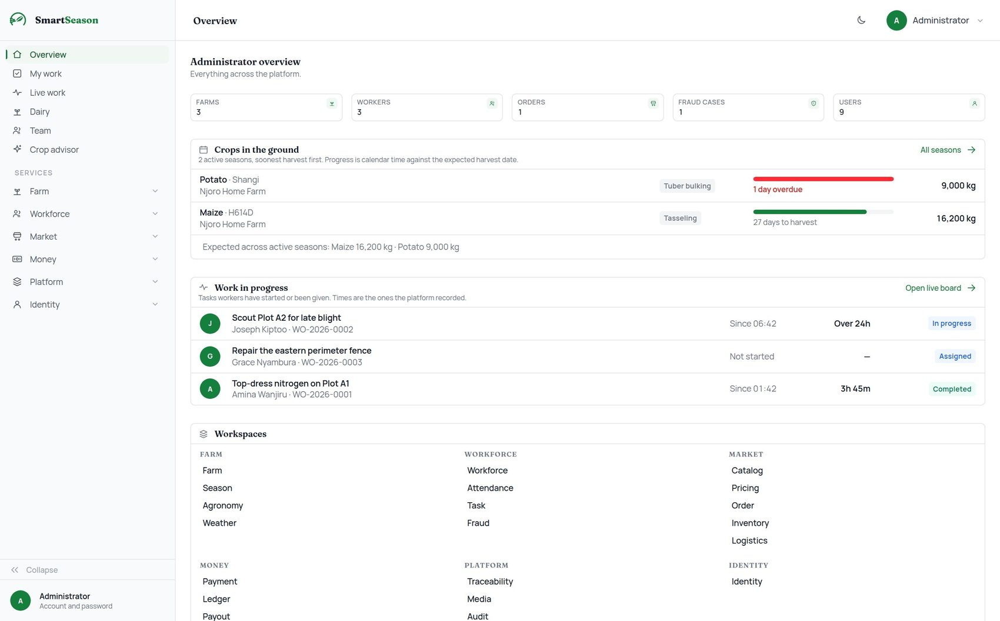
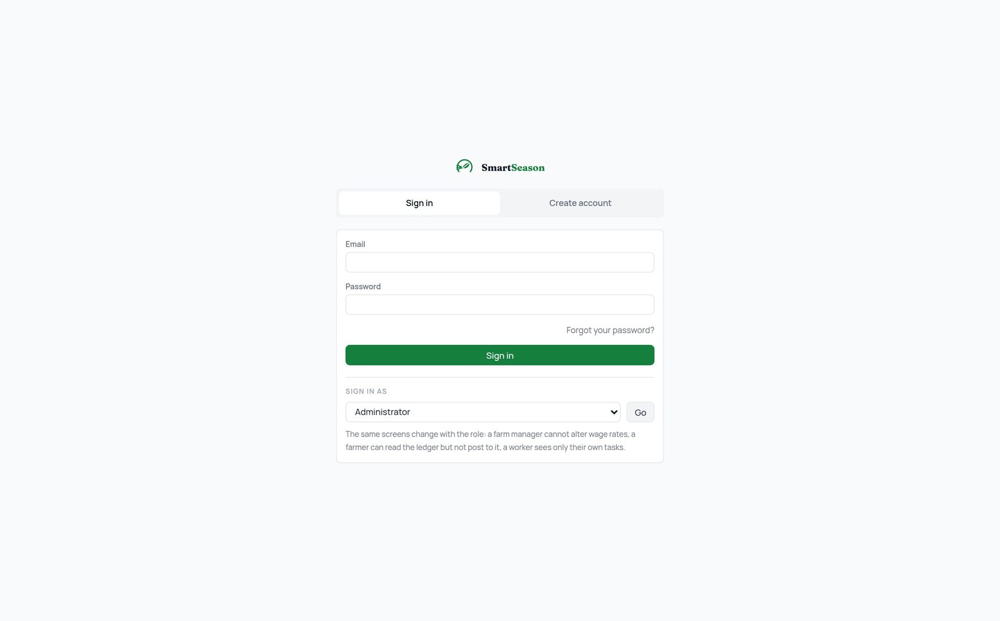
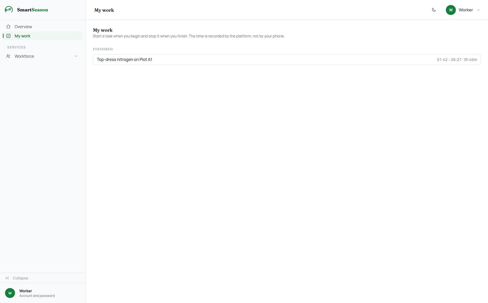
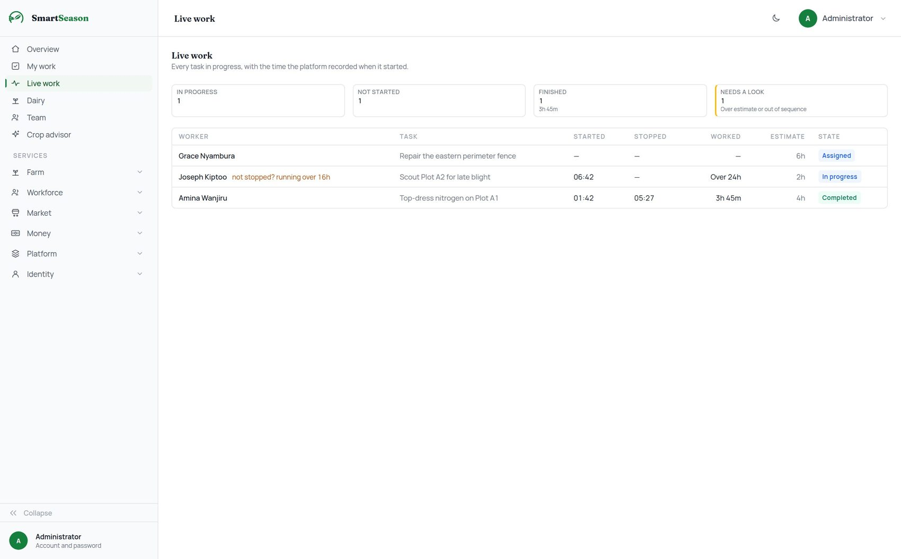
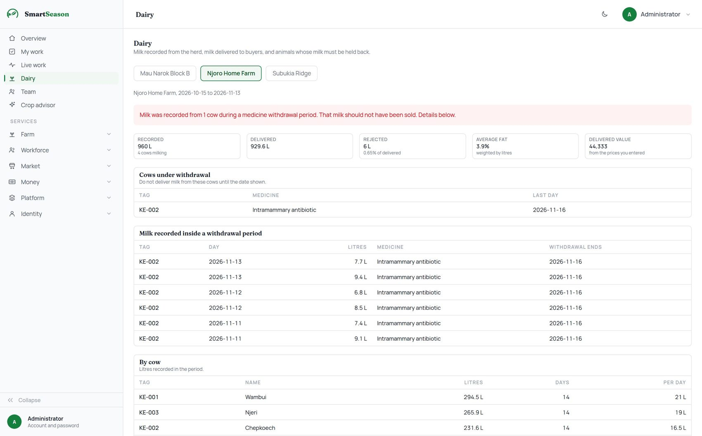
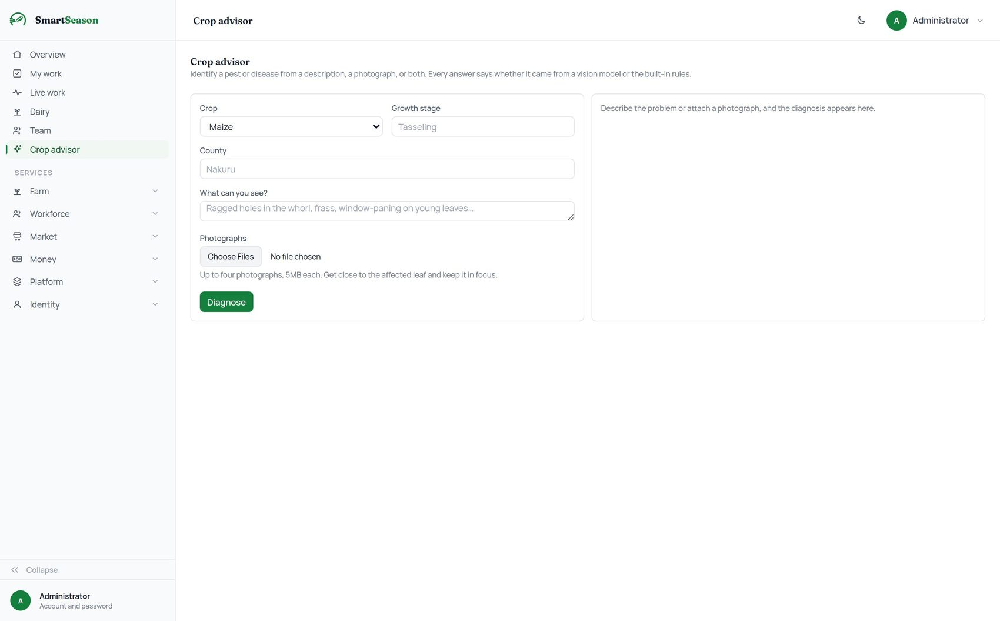
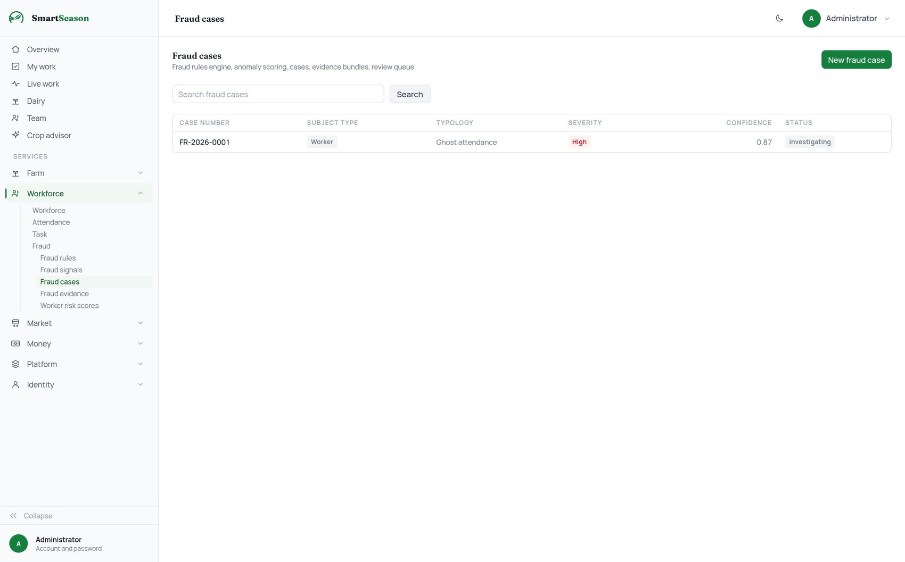
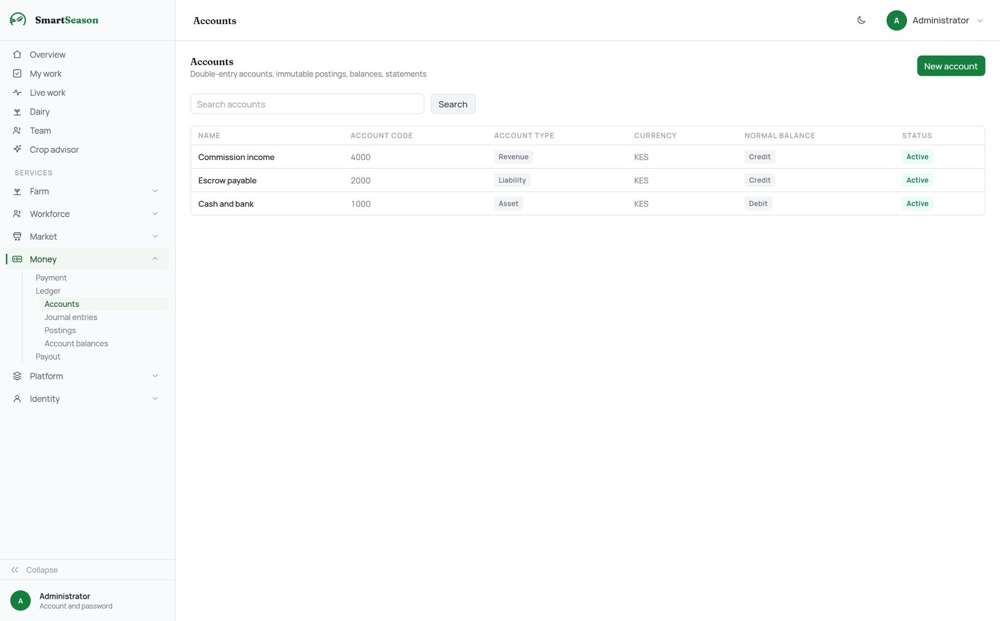
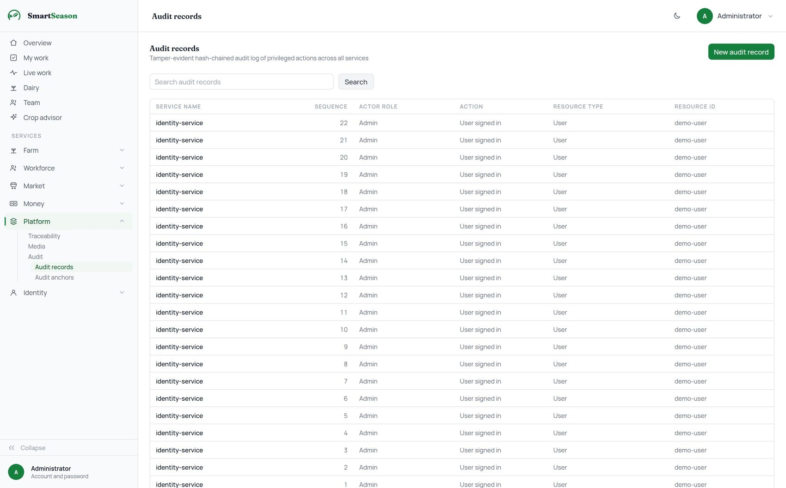

Agricultural operations platform for Kenya · System documentation, end to end
Prepared by Kennedy Mwanzia · github.com/kennie-afk · kennedy-portfolio-rouge.vercel.app · 13 November 2026
SmartSeason is software that helps a farm business in Kenya run itself and get paid. It puts everything that happens on a farm in one place: the land and the crops, the people hired to work, the produce harvested, the buyers who order it, the delivery, and the M-Pesa money that pays for it. Every action is recorded with who did it and when, and the records cannot be quietly changed.
A farm that hires labour and sells produce loses money and time in the same few places, and mostly cannot see where.
| On the farm | What SmartSeason does |
|---|---|
| Land and crops | Records farms, plots and the season for each crop, with the calendar of stages and a warning when a crop is running late. Gives advice on pests and diseases from a description or a photograph. |
| Workers and pay | A worker is given a task on their phone and presses Start and Stop. The time is recorded by the system, not the phone, so it cannot be changed. Clock-in only works at the farm. Suspicious patterns are flagged for the owner to review, and payments can be held until they are cleared. |
| Produce and sales | Records each harvest batch and its grade, lists produce for buyers, takes their orders, holds the stock for the order and tracks delivery to the door with proof of what was received. |
| Money | Collects payment through M-Pesa, records every shilling in a proper double-entry ledger, and pays farmers and workers out, with checks that stop a payment going to the wrong place. |
| Dairy | Records each cow's milk, what was delivered and what was rejected, and warns when milk is from a cow still under a medicine withdrawal and must not be sold. |
| Proof and trust | Keeps a tamper-evident log of important actions, and traces a batch back to its farm and certificates with a QR code. |
Eight kinds of people, and each sees a different system. The farm owner sees everything and the money. A manager assigns and checks work but cannot change anyone's pay. A worker sees only their own tasks. An agronomist sees crops, a storekeeper sees stock, finance is the only role that can move money, and a buyer sees only the produce side. This separation is deliberate: it is what makes the fraud controls trustworthy.
At seven a worker opens SmartSeason, sees Top-dress nitrogen on Plot A1, and presses Start. The owner, in town, sees on the live board that it started at 07:02. A photograph and the plot's location are attached when it is done, and the manager marks it verified. At the cooler, the dairy clerk records that 6 litres were rejected. When the maize is sold, the buyer's order reserves the stock, the truck is dispatched, the buyer's M-Pesa payment arrives, and the ledger shows the sale, the fee and what the farmer is owed. Nobody had to phone anybody, and every step has a time and a name against it.
It is a complete, working system in demonstration form, and it has not yet had a real customer. Live M-Pesa is not switched on, and some parts are built fully while others hold the data correctly but do not yet act on it. Section 10 lists exactly what is proven and what is not. Sections 11 and 12 explain how it can earn money and how to take it to market.
SmartSeason is built as 26 Spring Boot microservices (114 persisted aggregates) behind one Spring Cloud Gateway, with a Next.js web application. Each service owns its own PostgreSQL database and talks to the others only through events on Kafka. Eight roles each see a different platform, and one role table decides both what the menu shows and what each service will accept. No organisation can see another's data, enforced in the code and again in the database.
| Item | Fact |
|---|---|
| Domain services | 26, each with its own database, port and migrations |
| Persisted aggregates | 114 (109 from the original catalogue plus the 5 of the dairy module) |
| Edge | One Spring Cloud Gateway: token check, rate limiting, circuit breakers |
| Web application | Next.js 16, React 19, TypeScript, Tailwind CSS 4; one codebase for every role |
| Language and runtime | Java 21, Spring Boot 3.5, PostgreSQL 16, Kafka (Redpanda locally), Redis, PgBouncer, MinIO |
| Roles | Eight: administrator, farmer (owner), manager, agronomist, storekeeper, finance, buyer, worker |
| Services with business logic | 14 of 26; the other 12 carry the generated layer only |
| Demo stack | 27 containers (20 services plus database, pooler, cache, broker, object store, gateway, web), about 7.4 GiB; six services are left out and their menus hidden |
| Tests | 559 passing, 0 failing, across all services and the gateway at the last full count (28 September 2026); later work added its own tests |
| Customers | None. Nothing in this document is a customer figure |
How to read this document
Statements about what the system does describe the code as it stands. Statements about money in sections 11 and 12 are proposals to be tested in a pilot, not results. Where something is untested, unbuilt or unconnected it is labelled as such rather than left implied.
The platform is not one screen with a few permissions. Signing in as a different role changes what the platform is. One table of roles generates both the access rules on every service and the navigation, so the menu cannot offer anything a service will refuse.
| Role | Who they are | Can read | Can write | Notable limits |
|---|---|---|---|---|
| Administrator | Platform operator for the organisation | All 27 areas | All | Everything |
| Farmer (owner) | Owns the business | All 27 | 10 | Sees every money figure, cannot post to the ledger |
| Manager | Runs the day | 20 | 7 | Assigns work and runs attendance, cannot change wage rates |
| Agronomist | Crops and disease | 11 | 4 | No workforce, no money |
| Storekeeper | Stock and dispatch | 7 | 4 | Inventory and logistics only |
| Finance | Money | 10 | 3 | The only role that can move money |
| Buyer | Market side | 8 | 2 | Never sees workforce or fraud |
| Worker | Hired labour | 1 | 0 | Sees only their own tasks; another worker's task returns not found, not forbidden |
The 27 areas are the 26 services plus the dairy module, which has its own row in the role table.
Three separations are worth showing to any buyer of the system. A manager can see wage rates but the create button is gone and a direct call is refused. A farmer can read the whole ledger and post nothing to it, which is what makes the fraud controls mean something. A worker who guesses another worker's task address gets not found, because confirming that an assignment exists is itself information they should not have.
The best way to understand SmartSeason is to follow one season on one farm. The steps below name the service that does the work. Nothing in a step reaches into another service's database; where one step hands over to the next, it does so with an event or a call through the gateway.
A herd of cows is recorded with a tag each. Milk is recorded per cow per day and session, delivered to a buyer with a receipt, fat and solids readings and a price per litre the user enters. A medicine treatment records the last day the milk must be held back. The dairy summary then flags any milk that was recorded or delivered inside a withdrawal period and lists expected calvings. The system never guesses a price or a withdrawal period; both are whatever the user types from the medicine label or the vet.

Every request enters through the gateway, which checks the token, rate limits the caller and wraps the route in a circuit breaker. Each service then checks the token again on its own, so a service reached directly is still closed.
/api/<service>/** to exactly one upstream. Route prefixes are derived from the service name, so two routes cannot collide.The organisation is the tenant. Every table carries tenant_id from its first migration. Repositories expose only tenant-qualified finders; there is no bare find-by-id for application code to reach for. A row that belongs to another tenant is indistinguishable from a row that does not exist, so a cross-tenant request returns not found, not forbidden. An unbound tenant throws instead of widening the query.
A second layer sits in the database itself. Services connect as an unprivileged database role, and row-level security on the tables makes the database refuse a cross-tenant read even if application code forgot the tenant. The owner credentials are used only by the migration tool.
ss.workforce.clock-event-created.v1. A transactional outbox means an event is only published if the change that caused it committed.tools/catalogue.py is the single source of truth for service names, ports, databases and aggregates. A generator emits the mechanical layer from it: entities, tenant-scoped repositories, DTOs, migrations, gateway routes, container definitions, monitoring targets, role annotations, Kubernetes manifests and the web application's screens for all 114 aggregates. Hand-written business logic lives in an overlay that regeneration never overwrites. The consequence is that the generated parts cannot disagree with each other, and that a new aggregate is one catalogue line, not a dozen files.
There are 26 services in seven groups. 14 carry business logic beyond the generated layer and are described in full. The other 12 carry the generated layer only, which means a correct schema, tenant isolation, validation, role checks, REST endpoints and tests, but no behaviour yet beyond creating, reading, updating and deleting records. That is a deliberate order of work, not an omission by accident, and it is stated here so nobody sells them as more than they are.
Users, organisations, roles, sessions, KYC, JWT issuance + JWKS
AggregatesOrganisation, User, RefreshToken, KycRecord, OtpChallenge
Beyond generated CRUDRegistration and login, JWT minting, BCrypt at cost 12, refresh-token rotation (reuse revokes the whole family), lockout after five failures, login errors that do not reveal whether an account exists, and the team endpoint that creates one account per role.
Farms, plots, geo boundaries, soil profiles, cooperative membership
AggregatesFarm, Plot, SoilProfile, FarmMembership, Cow, MilkYield, MilkDelivery, CowHealthEvent, BreedingEvent
Beyond generated CRUDThe dairy module: cows, milk yields, milk deliveries, health events and breeding events, plus a summary endpoint (litres, rejection rate, weighted fat, delivered value, cows under medicine withdrawal, expected calvings). Rules the database enforces itself: one tag per farm, one reading per cow per day and session, rejected litres never above delivered.
Crop cycles per plot, stage calendars, planting plans, yields
AggregatesSeason, StageTemplate, SeasonStage, PlantingPlan
ImplementationGenerated layer only: schema, tenant-scoped repositories, validated DTOs, REST endpoints, role checks and tests. No business behaviour beyond create, read, update and delete yet.
Advisories, pest/disease library, scouting reports, crop playbooks
AggregatesAdvisory, PestDisease, ScoutingReport, CropPlaybook
Beyond generated CRUDThe crop advisor: diagnose from a description and up to four photographs, forecast a season, outline the weather. It uses a vision model when an API key is set and a built-in rules engine otherwise (nine pest and disease signatures, five crop profiles), and every answer states which of the two produced it.
Weather feeds, forecasts, NDVI, agro-climatic alerts per geo cell
AggregatesWeatherStation, Forecast, WeatherAlertRecord, NdviReading
ImplementationGenerated layer only: schema, tenant-scoped repositories, validated DTOs, REST endpoints, role checks and tests. No business behaviour beyond create, read, update and delete yet.
Device identity, provisioning, plot mapping, firmware, credentials
AggregatesDevice, DeviceCredential, FirmwareRelease
ImplementationGenerated layer only: schema, tenant-scoped repositories, validated DTOs, REST endpoints, role checks and tests. No business behaviour beyond create, read, update and delete yet.
Raw + downsampled device telemetry, anomaly emission (highest write volume)
AggregatesTelemetryReading, TelemetryAnomalyRecord, DownsampledReading
ImplementationGenerated layer only: schema, tenant-scoped repositories, validated DTOs, REST endpoints, role checks and tests. No business behaviour beyond create, read, update and delete yet.
Automation rules, actuator command pipeline, safety interlocks, digital twin
AggregatesAutomationRule, ActuatorCommand, DigitalTwin, SafetyInterlock
Beyond generated CRUDRule evaluation with cooldowns and safety interlocks: a manual override always wins, two actuators that must not run together are mutually exclusive, and every command has a maximum runtime.
Workers, contracts, wage rates, gangs, supervisors, farm assignment
AggregatesWorker, WorkerContract, WageRate, Gang, GangMembership
ImplementationGenerated layer only: schema, tenant-scoped repositories, validated DTOs, REST endpoints, role checks and tests. No business behaviour beyond create, read, update and delete yet.
Geofenced biometric clock-in/out, shifts, piece-rate tallies, offline sync
AggregatesGeofence, ClockEvent, Shift, PieceRateEntry
Beyond generated CRUDGeofence enforcement: a clock event with mocked GPS or a position outside the fence is rejected, a weak biometric match is flagged, and every accepted event is published for the fraud engine to read.
Work orders, assignments, checklists, photo/GPS evidence, verification
AggregatesWorkOrder, TaskAssignment, TaskEvidence, ChecklistItem
Beyond generated CRUDStart and stop with the time taken on the server, never from the worker's device. Checklists, photo and GPS evidence, and a worker can see only the tasks assigned to their own account. Each start and stop is written to the audit chain.
Fraud rules engine, anomaly scoring, cases, evidence bundles, review queue
AggregatesFraudRule, FraudSignal, FraudCase, FraudEvidence, WorkerRiskScore
Beyond generated CRUDA rules engine with five detectors (ghost worker, proxy clock-in, impossible travel, piece-rate inflation, hours inflation). Confidences combine probabilistically, so two independent signals of 0.5 score 75, not 100. A confidence of 0.60 opens a case for human review, and 0.75 also asks for the payout to be held. Nothing suspends a person automatically.
Produce taxonomy, products, variants, grading standards, certifications
AggregatesCommodity, Product, ProductVariant, GradeStandard, Certification
ImplementationGenerated layer only: schema, tenant-scoped repositories, validated DTOs, REST endpoints, role checks and tests. No business behaviour beyond create, read, update and delete yet.
Reference prices, market index per commodity/region, price series, suggestions
AggregatesPriceSeries, MarketIndex, PriceQuote
ImplementationGenerated layer only: schema, tenant-scoped repositories, validated DTOs, REST endpoints, role checks and tests. No business behaviour beyond create, read, update and delete yet.
Carts, orders, fulfillment saga, returns, disputes
AggregatesCart, CartItem, PurchaseOrder, OrderLine, OrderSagaState, OrderReturn, Dispute
Beyond generated CRUDThe fulfilment saga: a sequence of steps that, when one fails, compensates the earlier ones in reverse order, and carries on compensating even if a compensation step itself fails.
Aggregation-centre stock, batches, grading, reservations, farm-input reconciliation
AggregatesWarehouse, Batch, StockItem, GradingResult, Reservation, InputIssue, InputConsumption
Beyond generated CRUDReservations that hold stock without deducting it, oversell prevention, and an expiry sweep that releases holds nobody completed.
Transport jobs, driver/vehicle assignment, routing, cold chain, proof of delivery
AggregatesVehicle, Driver, TransportJob, RouteStop, ProofOfDelivery, ColdChainReading
ImplementationGenerated layer only: schema, tenant-scoped repositories, validated DTOs, REST endpoints, role checks and tests. No business behaviour beyond create, read, update and delete yet.
Payment intents, M-Pesa STK/C2B/B2C, cards, wallets, escrow, callback reconciliation
AggregatesPaymentIntent, MpesaTransaction, EscrowHold, Wallet, ProviderCallback
Beyond generated CRUDM-Pesa STK push, B2C and the callback endpoint Safaricom posts to. Phone numbers and whole-shilling amounts are validated, callbacks are idempotent (the checkout request id is the key, so a second delivery changes nothing), and a shared secret guards the callback address. A mock gateway runs in the demo; the live gateway needs Safaricom credentials and a public callback address.
Double-entry accounts, immutable postings, balances, statements
AggregatesAccount, JournalEntry, Posting, AccountBalance
Beyond generated CRUDDouble-entry posting where every entry must balance, replayed requests do not post twice, closed accounts and currency mismatches are refused, and balances are reported on the account's normal side.
Farmer settlements, bulk wage disbursement, fees, scheduling, fraud holds
AggregatesSettlement, PayoutBatch, PayoutItem, PayoutHold
Beyond generated CRUDAn eligibility policy that holds a payout when there is an open fraud case, an open dispute, a sanction, missing KYC, or the amount is above a ceiling.
Farm-to-fork lineage graph, certifications, QR pass
AggregatesTraceBatch, TraceLink, QrPass, CertEvidence
ImplementationGenerated layer only: schema, tenant-scoped repositories, validated DTOs, REST endpoints, role checks and tests. No business behaviour beyond create, read, update and delete yet.
SMS, USSD, push, WhatsApp, email; EN/SW templating, delivery tracking, quiet hours
AggregatesNotificationTemplate, Notification, UssdSession, DeliveryReceipt
Beyond generated CRUDEnglish and Swahili templates with locale fallback, quiet hours, and suppression of any message whose variables were left unfilled.
Pre-signed uploads, image/video processing, thumbnails, EXIF/GPS extraction
AggregatesMediaAsset, UploadTicket, MediaVariant
ImplementationGenerated layer only: schema, tenant-scoped repositories, validated DTOs, REST endpoints, role checks and tests. No business behaviour beyond create, read, update and delete yet.
Search indexes kept fresh from domain events (listings, farms, workers, produce)
AggregatesSearchDocument, IndexJob
ImplementationGenerated layer only: schema, tenant-scoped repositories, validated DTOs, REST endpoints, role checks and tests. No business behaviour beyond create, read, update and delete yet.
Event sink, data marts, dashboards API, scheduled reports, exports
AggregatesMetricSnapshot, Report, ReportRun, DashboardWidget
ImplementationGenerated layer only: schema, tenant-scoped repositories, validated DTOs, REST endpoints, role checks and tests. No business behaviour beyond create, read, update and delete yet.
Tamper-evident hash-chained audit log of privileged actions across all services
AggregatesAuditRecord, AuditAnchor
Beyond generated CRUDA tamper-evident log: each record's hash covers its own content and the previous record's hash. The service assigns the sequence and both hashes itself, never the caller, and a verify endpoint names the first broken record.
One Next.js application serves every role. The navigation is generated from the same role table as the service access rules. Beyond the generated list-and-form screens for every aggregate, a small number of purpose-built screens carry the work people do every day.
| Screen | For | What it does |
|---|---|---|
| Overview | Everyone | Role-specific summary: counts, crops in the ground with progress, work in progress |
| My work | Workers | Their own assigned tasks with Start and Stop and a live timer; the time is the server's |
| Live work | Owner, manager | Every task in progress, who started it and when, elapsed time, over-estimate flags |
| Dairy | Owner, manager, agronomist | Herd summary per farm, withdrawal alerts, expected calvings |
| Team | Owner | Create accounts and assign roles |
| Crop advisor | Owner, manager, agronomist | Describe or photograph a problem and get a diagnosis, labelled by what produced it |
| Farm, Workforce, Market, Money, Platform, Identity | By role | Generated screens for every aggregate: search, list, create, edit, delete |
The visual design is compact and quiet: a serif heading face over a clean text face, one-pixel borders, no shadows, colour-only hover states and a green accent. Dense tables are the point, because the people using it want to see many records at once.








Security here is a set of independent layers, so that one mistake in one layer does not become a breach.
| Layer | What it does |
|---|---|
| Tokens | Signed, short-lived access tokens; refresh tokens stored only as hashes, single use, rotated each time. Reusing a spent refresh token revokes the whole family, the standard response to a stolen token. |
| Passwords and login | BCrypt at cost 12. An unknown account and a wrong password return the same message, so the login cannot be used to find out who has an account. Five failures lock the account. |
| Roles | Eight roles from one table, generating the access annotation on every controller and the navigation. Reads are restricted as well as writes, so a token holder cannot read wage rates or payouts unless their role allows it. |
| Own-record rule | A worker sees only their own assignments. Another worker's task returns not found. |
| Tenant isolation | Tenant-qualified queries in code, row-level security in the database, an unprivileged database role, and a live check that proves two organisations cannot see each other and that switching the protection off makes checks fail. |
| Rate limiting | Two layers: the gateway, and a per-service Redis bucket keyed by organisation and user, applied after sign-in. It fails open if Redis is down, because refusing everything would be the outage it exists to prevent. |
| Audit | A hash-chained log of privileged actions. Verified against the live database: an untouched chain reports intact, and a direct edit of one row reports the exact sequence that broke. |
| Server time | Task start and stop times are taken on the server. A device clock is never trusted for pay. |
| Errors | Problem documents with stable codes. Nothing internal, such as a table name or a stack trace, is returned to a caller. |
Open security items, stated plainly
| Task | Command |
|---|---|
| Start a demonstration stack with data | scripts/demo.sh |
| See what is running and its memory | scripts/demo.sh status |
| Open every screen as every role and list the empty ones | scripts/demo.sh check |
| Top up demonstration data (safe to repeat) | scripts/demo.sh seed |
| Stop, keeping the data | scripts/demo.sh down |
| Start from empty | scripts/demo.sh reset |
| Build and test every service | tools/build-all.sh |
| End-to-end smoke test through the gateway | tools/smoke-test.sh |
| Prove the attendance to fraud event path | tools/event-path-test.sh |
| Prove tenant isolation on a live stack | scripts/tenant_isolation_check.py |
| Address (demonstration) | What it is |
|---|---|
| http://localhost:13000 | The web application |
| http://localhost:18080 | The gateway (API) |
| http://localhost:{port}/swagger-ui.html | Each service's interactive API documentation |
The demonstration stack needs roughly 7.4 GiB of memory and about six minutes from empty to seeded. A full stack with all 26 services needs about 12 GiB. Run one platform at a time on a small machine. Container images are built one at a time because building them all together exhausts memory.
SmartSeason has been measured, not assumed. The honest result is that it cannot yet carry ten million users, and the work to close that gap has been done in an order and then run for real on a throwaway cluster.
| Concern | What was done | Evidence |
|---|---|---|
| Connection exhaustion | PgBouncer in transaction mode | 3 real database connections at idle for the whole platform; throughput 62 to 119 requests per second at 32 concurrent callers on a laptop |
| Abuse and overload | Gateway and per-service rate limits | 80 rapid writes: 66 allowed, 14 refused with a retry hint; 45 failed logins: 31 through, 14 refused |
| Slow list pages | Counts moved off the page query and cached for 30 seconds; rows are never cached | Removes a full index walk that ran only to print “1–25 of N” |
| Deep paging | Keyset (cursor) pagination replaces offset | Test harness written and run; data volume too small to show the offset curve, so inconclusive |
| Elasticity | Autoscaler and disruption budget for every deployment | Manifests applied to a real cluster; two real manifest bugs found and fixed there |
| Read load | Read-replica routing | Built; off until a replica host is configured |
| Audit write race | Unique index plus per-tenant lock | 50 concurrent appends produced a contiguous chain that verifies |
What the load test did and did not show
A seven-minute ramp to 250 virtual users ran on a real cluster with one replica per service and the laptop-sized connection pool still set. Most traffic was refused by circuit breakers (70%) or the rate limiter (24%), which is those protections working as designed, and there were no pod restarts across every service for the whole run. It is evidence of resilience under overload. It is not a throughput claim for production hardware, which needs the pool and replica counts set for that hardware and a longer, larger run.
SmartSeason holds three things that people already pay to solve: the cost of labour that was paid for but not worked, the friction of selling produce and being paid for it, and the proof that produce is what it is claimed to be. The streams below attach a price to each. Every price and volume is a proposal to be tested in a pilot. None of it is a forecast and no figure comes from a customer.
| Customer | Their problem | What SmartSeason gives them |
|---|---|---|
| Commercial and medium farms with hired labour | Paying for ghost workers, inflated hours, proxy clock-ins; no record of who did what | Geofenced clock-in, server-timed tasks, fraud cases with evidence, payouts held on a flag |
| Dairy cooperatives and societies | Milk rejected at the cooler, disputes over litres and price, medicine residues in milk | Per-cow records, delivery receipts, withdrawal alerts, rejection rate |
| Produce buyers, aggregators and processors | Uncertain quality and supply, slow reconciliation, payment risk | Catalogue, grading, orders with escrow, proof of delivery, traceability |
| Exporters and certification-dependent buyers | Proving origin and certificates batch by batch | Lineage graph, certificate evidence, QR pass |
| Input suppliers and agrovets | No view of what was bought, applied and with what result | Input issue and consumption records, advisor reach |
| Lenders, SACCOs and insurers (later) | No reliable record of a farm's activity to lend or insure against | Consented, structured activity and payment history |
| # | Stream | Basis (proposed) | Built on | Ready to charge? |
|---|---|---|---|---|
| 1 | Platform subscription for farms with hired labour | A monthly fee per farm plus a small fee per active worker | Workforce, attendance, task, fraud | Product yes, billing no |
| 2 | Wage and settlement disbursement | A fee per payout, set below the cost of the cash-in-hand alternative | Payout, payment, ledger | Mock only; needs live M-Pesa and a licensed provider |
| 3 | Marketplace commission on orders | A percentage of order value, taken in the ledger as commission income | Order, payment, ledger, logistics | Flow works on the mock; needs live M-Pesa |
| 4 | Dairy cooperative module | A fee per active member per month, or per litre handled | Farm (dairy), payout | Records yes; member payouts not built |
| 5 | Traceability and compliance packs | A fee per batch traced, or a flat annual pack for an exporter | Traceability, media, audit | Data model yes; buyer-facing view thin |
| 6 | Crop advisor | Included in a plan, or metered per diagnosis for outside users | Agronomy intelligence | Works on rules; vision needs a key and its running cost |
| 7 | Embedded finance referrals (later) | A referral fee on loans or cover originated from consented activity records | Ledger, payment, analytics | Not built; needs consent, data-protection and partner work |
Why stream 1 comes first
Wage fraud is the clearest pain with the shortest path to a yes. The owner can see the loss, the product directly shrinks it, and none of it depends on live M-Pesa, a marketplace of strangers or any licence. The first revenue should be a subscription from farms that pay people to work. Streams 2 and 3 follow once money is moving through a licensed provider, because that is where the volume and the risk both sit.
The table shows how the streams add up, so the pilot knows which numbers to measure. Every input is a stand-in. Replace each one with what the pilot actually shows before using any total.
| Stream | Assumed inputs | Monthly result |
|---|---|---|
| Subscription | 100 farms × (KES 1,500 per farm + 12 workers × KES 50) | KES 210,000 |
| Disbursement | 1,200 workers × 4 payouts a month × KES 15 per payout | KES 72,000 |
| Marketplace | KES 5,000,000 of orders a month × 1.5% | KES 75,000 |
| Dairy module | 400 members × KES 40 per month | KES 16,000 |
| Illustrative total | KES 373,000 |
This is arithmetic on assumed inputs, not a forecast. Costs are not shown: mobile-money charges on payouts, text messages, hosting for a stack that needs about 7.4 GiB even at demonstration size, the vision model, support and sales. A pilot must measure each before any margin is claimed.
The one-sentence offer
Know who worked, what was done, and what was paid, on every farm task, and get paid for your produce through M-Pesa with a record nobody can quietly change.
The first message is about labour cost and trust, because that is felt immediately. Produce, delivery and traceability are the second conversation, once a farm already trusts the system with its people.
| Audience | Lead with | Proof to show |
|---|---|---|
| Farm owner | “You pay for hours nobody worked. See which ones.” | The live board and a fraud case with its evidence; the role switch showing a manager cannot change pay |
| Farm manager | “Assign, watch and verify work from your phone.” | A task started and stopped with the time recorded for them |
| Worker | “Your hours are recorded fairly, and so is your pay.” | My work: simple Start and Stop |
| Cooperative or dairy society | “Fewer rejected litres and no disputes over what was delivered.” | The dairy summary with withdrawal alerts |
| Buyer or aggregator | “Know what you are buying before it arrives.” | Grading results, proof of delivery, QR trace |
| Phase | Goal | What happens |
|---|---|---|
| 0. Readiness | Be safe to put in front of a customer | Register for data protection, agree a payment arrangement with a licensed provider, set a data-sharing and terms text, switch live M-Pesa on in a test environment, add billing, and set the production keys |
| 1. Pilot | Three to five farms in one area (the demonstration data is already Njoro and Nakuru) | Free for a fixed period. Install, train workers, run for a full season. Measure: workers clocking in weekly, fraud cases raised and resolved, hours disputed, time saved on payroll |
| 2. First revenue | Convert pilot farms to paid | Subscription priced against the loss the pilot revealed. Reference customers and written results |
| 3. Money in motion | Open disbursement and marketplace | Live M-Pesa through the licensed provider, wage payouts with holds, first orders between pilot farms and a buyer |
| 4. Cooperatives and exporters | Dairy module and traceability packs | Member payouts for dairy, certificate packs for exporters |
| 5. Finance | Referral revenue | Only with consent, data-protection review and a lending or insurance partner |
| Measure | Why it matters |
|---|---|
| Farms activated (first task started) | Shows the product is actually used, not just signed up for |
| Workers clocking in each week | The core behaviour the whole fraud value depends on |
| Fraud cases raised and resolved, and hours disputed | The loss the product reveals, which prices the subscription |
| Share of trial farms that convert to paid | The only honest test of the price |
| Value moving through the ledger and fees earned | Opens the case for streams 2 and 3 |
| Support requests per farm | Sets how many farms one person can look after |
To be confirmed with a lawyer before launch
In the order that gets to first revenue fastest. Each item is something the platform cannot yet do and a customer would need.
| Priority | Build | Why | Unlocks |
|---|---|---|---|
| 1 | Billing: plans, metering of farms and active workers, invoices, and payment of the platform's own fees | There is no way to charge anyone today | Stream 1 |
| 2 | Offline clock-in and task capture with safe later sync | Farms have poor signal; without it workers cannot use it on the day | Every farm |
| 3 | SMS and WhatsApp delivery through a carrier, and add the notification service to the demonstration | Workers and owners need reminders and alerts in English and Swahili | Adoption |
| 4 | Live M-Pesa in a test environment, then production | Collection and payouts are the money in motion | Streams 2 and 3 |
| 5 | Asymmetric signing keys with a published key set | Closes the largest open security item before real customers | Trust |
| 6 | Business behaviour in workforce and season services (wage calculation from attendance, stage alerts) | Turns recorded data into pay and prompts | Retention |
| 7 | Dairy member payouts, quality-based pricing, member statements | Completes the cooperative module | Stream 4 |
| 8 | Buyer-facing trace page from the QR pass | Makes the exporter pack visible to the person who pays for it | Stream 5 |
| 9 | Longer load test on production-sized infrastructure | Replaces “should scale” with a measured number | Larger customers |
| Service | Port | Database | Aggregates | Depth | In the demo |
|---|---|---|---|---|---|
| identity-service | 8081 | identity_db | 5 | Logic | Yes |
| farm-service | 8082 | farm_db | 9 | Logic | Yes |
| season-service | 8083 | season_db | 4 | Generated | Yes |
| agronomy-service | 8084 | agronomy_db | 4 | Logic | Yes |
| weather-service | 8085 | weather_db | 4 | Generated | Yes |
| device-registry-service | 8086 | device_db | 3 | Generated | No |
| telemetry-ingest-service | 8087 | telemetry_db | 3 | Generated | No |
| automation-service | 8088 | automation_db | 4 | Logic | No |
| workforce-service | 8089 | workforce_db | 5 | Generated | Yes |
| attendance-service | 8090 | attendance_db | 4 | Logic | Yes |
| task-service | 8091 | task_db | 4 | Logic | Yes |
| fraud-service | 8092 | fraud_db | 5 | Logic | Yes |
| catalog-service | 8093 | catalog_db | 5 | Generated | Yes |
| pricing-service | 8095 | pricing_db | 3 | Generated | Yes |
| order-service | 8096 | order_db | 7 | Logic | Yes |
| inventory-service | 8097 | inventory_db | 7 | Logic | Yes |
| logistics-service | 8098 | logistics_db | 6 | Generated | Yes |
| payment-service | 8099 | payment_db | 5 | Logic | Yes |
| ledger-service | 8100 | ledger_db | 4 | Logic | Yes |
| payout-service | 8101 | payout_db | 4 | Logic | Yes |
| traceability-service | 8102 | traceability_db | 4 | Generated | Yes |
| notification-service | 8103 | notification_db | 4 | Logic | No |
| media-service | 8104 | media_db | 3 | Generated | Yes |
| search-service | 8105 | search_db | 2 | Generated | No |
| analytics-service | 8106 | analytics_db | 4 | Generated | No |
| audit-service | 8107 | audit_db | 2 | Logic | Yes |
Created through the platform's own team endpoint, so passwords are hashed exactly as a real sign-up would hash them. On a demonstration stack the sign-in page also offers a “Sign in as” picker. The password is generated for each demonstration stack and is not printed here.
| Role | Person | |
|---|---|---|
| demo@smartseason.local | Administrator | Demo Administrator |
| farmer@smartseason.local | Farmer (owner) | Wanjiku Kamau |
| manager@smartseason.local | Manager | Brian Otieno |
| agronomist@smartseason.local | Agronomist | Dr. Faith Chebet |
| store@smartseason.local | Storekeeper | Samuel Mutua |
| finance@smartseason.local | Finance | Esther Njeri |
| buyer@smartseason.local | Buyer | Hassan Abdi |
| amina@smartseason.local | Worker | Amina Wanjiru |
| joseph@smartseason.local | Worker | Joseph Kiptoo |
| Term | Meaning |
|---|---|
| Tenant | One organisation. All its data is invisible to every other organisation. |
| Aggregate | A persisted record type, such as a farm, a work order or a payment intent. |
| Saga | A multi-step business process that undoes completed steps, in reverse, if a later step fails. |
| Outbox | A table written in the same transaction as a change, so an event is published only if the change committed. |
| Row-level security | A database rule that hides rows belonging to another tenant even from a query that forgot to filter. |
| Hash chain | A log in which each record's fingerprint includes the previous record's, so editing one breaks all later ones. |
| Keyset pagination | Paging by “records after this one” rather than “skip N records”; its cost does not grow with depth. |
| STK push | The M-Pesa prompt that appears on a customer's phone asking them to approve a payment. |
| B2C | Business to customer: money sent from the business to a phone, used for wages and settlements. |
| Withdrawal period | The days after a medicine treatment during which a cow's milk must not be sold. |
| NDVI | A satellite measure of how green and vigorous a crop is. |
| KYC | Know your customer: identity checks on a person or organisation. |